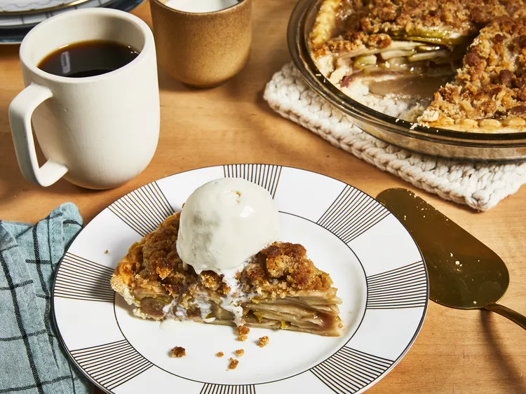

Wendy's Chocolate Frosty
How'd I get the recipe for this one? (DIY version of their chcolate frosty)
Ingredients
- 6 cups thinly sliced apples
- 1 tablespoon lemon juice (Optional)
- ¾ cup white sugar
- 2 tablespoons all-purpose flour
- ½ teaspoon ground cinnamon
- ⅛ teaspoon ground nutmeg
- ½ cup raisins (Optional)
- ½ cup chopped walnuts (Optional)
- 1 (9 inch) pie shell
- ½ cup all-purpose flour
- ½ cup packed brown sugar
- 3 tablespoons butter
Recipe Instructions
- Preheat the oven to 375 degrees F (190 degrees C).
- Place sliced apples in a large bowl; sprinkle with lemon juice.
Mix white sugar, 2 tablespoons flour, cinnamon, and nutmeg together in a small bowl;
sprinkle mixture over apples and toss until evenly coated.
Stir in raisins and walnuts; transfer mixture into pie shell.
- Mix 1/2 cup flour and brown sugar together in a small bowl.
Blend in butter with a fork until mixture is crumbly; sprinkle over apple filling.
Cover top of pie loosely with aluminum foil.
- Bake in the preheated oven for 25 minutes.
Remove foil and bake until top is golden brown and filling is bubbly, about 25 to 30 minutes more.
Cool on a wire rack before serving.
Back to top
Go to homepage